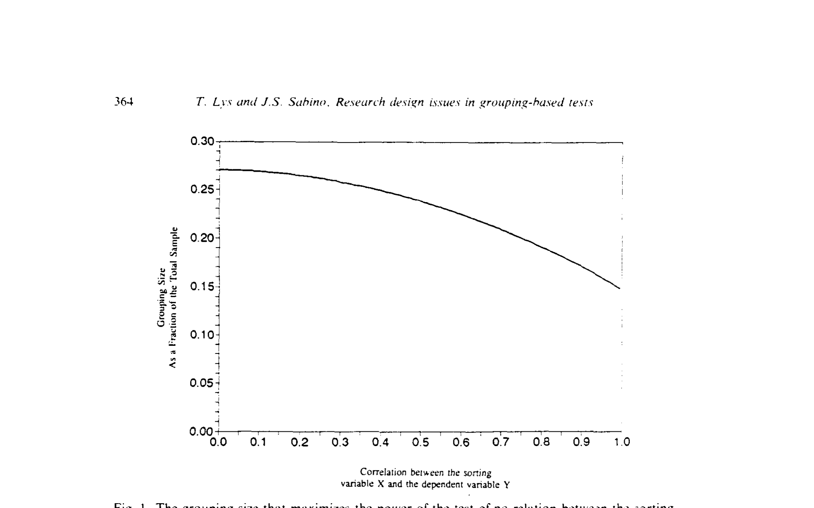
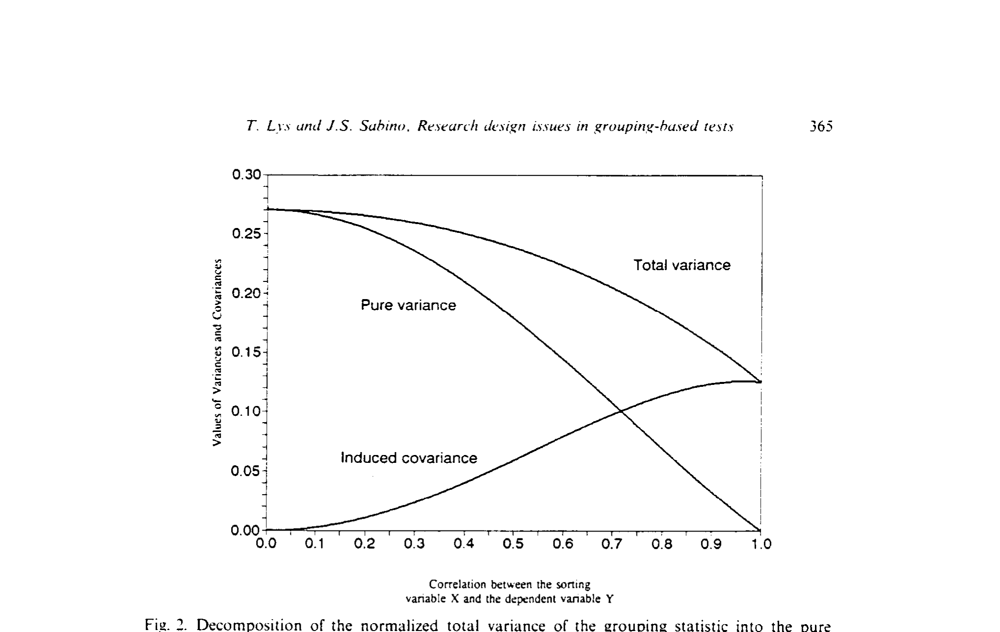
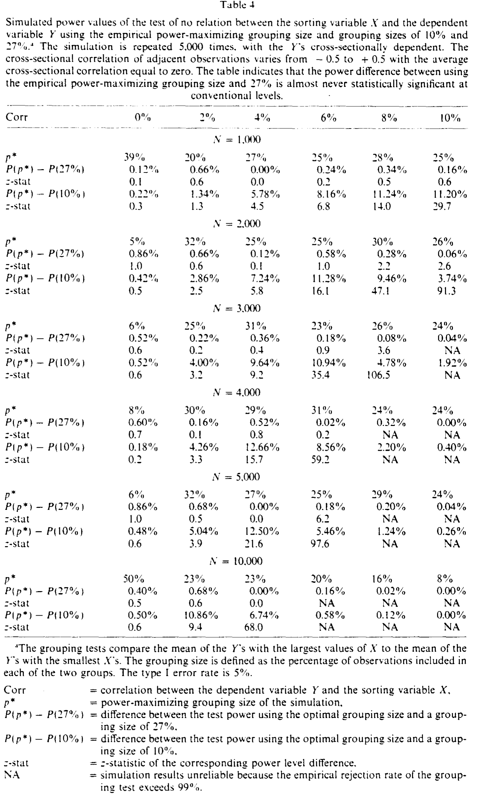
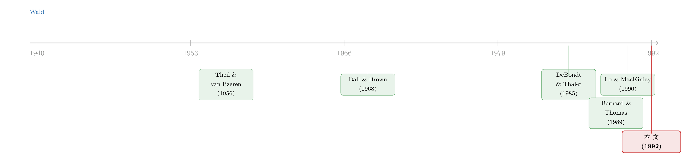

十分位的迷信：分组检验里那个被忽略的 27%
本文读的是 Lys and Sabino (1992, Journal of Financial Economics)：当你把样本按某个变量排序、再比较最高组与最低组的均值时，让检验功效最大的分组比例不是大家习惯用的 10%，而是每端各取 27%；而且无论怎么取，分组 (grouping) 在功效上都注定输给回归——哪怕自变量带着测量误差。
1 一个没人追问的「排队」习惯
打开任何一篇做市场有效性 (market efficiency) 检验的论文，你几乎总能看到同一套动作：把全部股票按某个公开信息——过去收益、未预期盈余、市值、市盈率——从小到大排成一队，切成十个组（十分位，decile），然后做多排在最前面的那一组、做空垫底的那一组，算一算这个多空组合的「异常收益」显不显著。
DeBondt and Thaler (1985) 用过去几年的累计收益排队，发现了「过度反应」；Ball and Brown (1968)、Bernard and Thomas (1989) 用盈余排队，量出了赫赫有名的盈余公告后漂移 (post-earnings-announcement drift)；Reinganum (1981) 用市值，Basu (1983) 用市盈率。方法不同，套路一样：排序，分组，比两端。
这套做法之所以受欢迎，是因为它「廉价」——它的备择假设 (alternative hypothesis) 只对排序变量与被解释变量之间的函数关系做了极弱的假设。你不必先写下「收益到底怎样依赖盈余」的具体函数形式，就能检验「它们到底有没有关系」。更何况，盯着最极端的那些观测，看上去还能放大信号、提高功效。
可是，有一个再基础不过的问题，二十多年里几乎没人正面回答过：为什么是十分位？为什么每端取 10%，而不是 5%、不是 20%？
这不是吹毛求疵。文献里这个比例其实从 1% 到 20% 各取所好，毫无统一标准——而本文要告诉你的是：这个看似随手一定的比例，恰恰悄悄决定了你的检验有多大功效。一个不显著的异象，也许根本不是因为市场有效，而仅仅是因为你把组分得太小、把功效给浪费掉了。
接着，一个自然的问题是：如果分组比例真的关乎功效，那存不存在一个最优的比例？这正是 Lys 和 Sabino 要解的题。
2 把问题摆上桌：模型设定
我们沿用 Lo and MacKinlay (1990) 的框架。记被解释变量为 \(Y_i\)，排序变量（也叫自变量、grouping variable）为 \(\tilde{X}_i\)。在备择假设下，二者的关系是
$$Y_i = b\,g(\tilde{X}_i) + \varepsilon_i$$
这里 \(g(\cdot)\) 是研究者并不知道的某个函数，\(\varepsilon_i\) 是与 \(g(\tilde{X}_i)\) 无关的误差。原假设「二者无关」就是 \(b=0\)。注意一个关键前提：\(g(\cdot)\) 必须严格单调 \(\big(g'(\cdot)>0\big)\)——只有这样，按 \(\tilde X\) 排序才等价于按 \(g(\tilde X)\) 排序，分组检验才有意义；如果 \(g(\cdot)\) 非单调，分组根本测不出东西。
为了把分析做下去，作者假设 \(Y_i\) 与 \(g(\tilde X_i)\) 服从二元正态分布，并把所有变量标准化：\(Y_i\)、\(X_i\) 均值为零、方差为一，\(\varepsilon_i\) 均值为零、方差为 \(1-\rho^2\)。于是模型干净地塌缩成一行：
$$Y_i = \rho X_i + \varepsilon_i, \qquad b=0 \Longleftrightarrow \rho = 0$$
这里的 \(\rho\) 就是 \(Y\) 与 \(X\) 的相关系数，它度量的是「\(X\) 能在多大程度上预测 \(Y\)」。\(\rho=1\) 时误差方差为零，\(X\) 完美预测 \(Y\)；\(\rho=0\) 时 \(X\) 一无所知。在市场有效性检验里，\(\rho\) 通常很小（个位数百分比）——记住这一点，后面会用到。
3 核心推导：次序统计量与那个噪声项
现在把样本量记作 \(N\)，按 \(X\) 给 \(N\) 个 \(Y\) 排序。第 \(r\) 名的 \(X\) 记作 \(X_{r:N}\)，与它配对的那个 \(Y\) 记作 \(Y_{[r:N]}\)，统计学上叫做 \(X_{r:N}\) 的伴随次序统计量（concomitant, Yang (1977)）。分组检验比的，就是最高 \(p\) 比例与最低 \(p\) 比例那两端的均值之差 \(\bar Y_{max}-\bar Y_{min}\)。
这里有个微妙之处。把 \(X\) 排好序之后，
$$Y_{[r:N]} = \rho\,X_{r:N} + \varepsilon_{[r]}$$
由于 \(\varepsilon_i\) 独立于 \(X_i\)，误差项 \(\varepsilon_{[r]}\) 仍然是个干净的噪声，性质不变。于是给定 \(X=x\)，\(Y\) 的条件均值和条件方差就是
$$m(x) = E[Y\mid X=x] = \rho x$$
$$\sigma^2(x) = \mathrm{var}[Y\mid X=x] = 1-\rho^2$$
接下来真正困难的一步在于方差。小样本里，次序统计量彼此并不独立（一个观测排第几，取决于别人排第几），这让小样本分布几乎无从下手。所以作者退一步，借助次序统计量的渐近性质（grouping 检验本就常用大样本）。当 \(N\to\infty\)，下端的临界点 \(X_{min}\to\Phi^{-1}(p)\)、上端 \(X_{max}\to\Phi^{-1}(1-p)\)（\(\Phi\) 是排序变量的累积分布函数）几乎必然成立。
由此可证（细节见原文附录），\(\bar Y_{max}-\bar Y_{min}\) 渐近正态，其渐近均值为
$$E_{asy}[\bar Y_{max}-\bar Y_{min}] = \frac{2}{p}\int_{\Phi^{-1}(1-p)}^{\infty} m(x)\,d\Phi(x) = \frac{2\rho}{p}\int_{1-p}^{1}\Phi^{-1}(s)\,ds$$
直觉很清楚：\(p\) 越小，你取的两端越极端，均值之差（也就是信号）越大。
但方差里藏着一个魔鬼。\(\bar Y_{max}-\bar Y_{min}\) 的渐近方差来自两个源头：一是 \(Y\) 在「\(X\) 落于极端」这个条件下本身的「纯方差」(pure variance)，二是分组本身诱导出的协方差(induced covariance)。后者是整篇文章的关窍。
为什么排序会「凭空」造出协方差？因为当你固定取「最高/最低各 \(p\)%」这一固定百分比时（而不是 Lo-MacKinlay 那种「固定相对秩」），即便 \(N\) 增大，相邻的（彼此相关的）\(X\) 仍然一起被关进同一个分位里，不会变得独立。而当 \(\rho\neq 0\)，\(X\) 的这种相邻相关性就传染给了 \(Y\)。\(\rho\) 越大，按 \(X\) 的排序就越像按 \(Y\) 自己排序，这种被诱导出来的协方差也就越强。
把两部分写在一起，方差是
$$\mathrm{var}_{asy}(\bar Y_{max}-\bar Y_{min}) = \frac{1}{pN}\Big[\underbrace{(1-\rho^2)p}_{} + \underbrace{2\rho^2\,\mathrm{cov}(p)}_{}\Big]$$
（请原谅这一行的 \underbrace 只是占位，真正的中文解释在下面。）第一项 \((1-\rho^2)p\) 是「标准化纯方差」，第二项 \(2\rho^2\mathrm{cov}(p)\) 是「分组诱导的协方差」。随着 \(\rho\to 1\)，纯方差的贡献趋于消失，而诱导协方差的贡献越来越大——这一升一降，正是后面 27% 会随 \(\rho\) 缓慢下滑的根源。
4 把信号与噪声写成一道最优化
研究者一旦拿到样本量 \(N\)，唯一能选的旋钮就是 \(p\)。备择假设一般是双边的 \(\rho\neq 0\)，直接算功效很麻烦；好在均值和方差都受 \(\rho\) 影响，于是作者改用 Wald 统计量（Engle (1984)）——它在原假设下服从一个自由度的卡方分布，在 \(\rho\neq 0\) 时分布右移，移动的幅度由非中心参数 (noncentrality parameter) \(\lambda_{grouping}\) 刻画。MacKinlay (1987) 告诉我们：让 \(\lambda\) 最大，就等于让功效最大。
这个非中心参数，正是整篇论文的「主方程」——它把「信号」与「两种噪声」摆在了同一个分式里：
这里就能看清那对此消彼长的力量了：\(p\) 调小，分子的信号变大（好事），但分母的纯方差也在变小，于是「多用观测带来的分散化好处」减弱（坏事）。最优的 \(p^\*\) 就是这两股力的平衡点。剔掉与 \(p\) 无关的乘性常数，它满足
$$p^\* = \arg\max \; \frac{\left[\int_{1-p}^{1}\Phi^{-1}(s)\,ds\right]^2}{(1-\rho^2)p + 2\rho^2\,\mathrm{cov}(p)} \qquad \text{s.t.}\ \ p \le \tfrac{1}{2}$$
（约束 \(p\le\frac12\) 是为了防止两端互相重叠、彼此抵消。）
这个式子里藏着第一个漂亮结论：\(p^\*\) 与样本量 \(N\) 无关！它只取决于相关系数 \(\rho\) 和排序变量的分布形态 \(\Phi(\cdot)\)。换句话说，「该取多少比例」是个可以一劳永逸算出来的常数，跟你手里有一百个还是一万个观测毫无关系。
5 反转一：那个 27%
方程没有闭式解，作者就在 \(0\le\rho\le1\) 上以 0.001 为步长数值求解，把结果画成了图 I。

Figure I: The grouping size that maximizes the power of the test of no relation between the sorting
结论令人意外又踏实：\(p^\*\) 从 \(\rho=0\) 时的 27% 单调下滑到 \(\rho=1\) 时的 14.81%。但请看那条曲线左端有多平——在市场有效性检验里 \(\rho\) 通常落在 0 到 10% 之间，这一段里 \(p^\*\) 几乎就钉在 27% 不动；事实上，\(\rho\) 要一直升到 40% 以上，\(p^\*\) 才会跌破 25%。
为什么会有这条缓坡？答案就在上一节那对力量里。图 3 把方差分解给你看：随着 \(\rho\) 增大，纯方差的贡献下降，诱导协方差的贡献上升；但数值上，纯方差降得比协方差升得更多，于是总方差随 \(\rho\) 下降，最优比例也就随之微微缩小。

Figure 3: Decomposition of the normalized total variance of the grouping statistic into the pure
更让人安心的是它的稳健性。当 \(\rho<0.10\) 时，\(0.27-p^\*\) 还不到 \(0.01\)；即便 \(\rho\) 再大些、\(p^\*\) 偏离得多一点，那时检验本身已经极其有力、原假设几乎必被拒绝，偏离最优带来的损失照样可以忽略。作者对 \(N\) 从 100 到 10,000 逐一核算：\(N=100\) 时，用 27% 替代真正的 \(p^\*\)，相对功效损失从不超过 0.1%；\(N\) 从 200 到 10,000，更是从不超过 0.01%。
于是有了一条干净利落的实务规则：只要排序变量近似正态、\(N>100\)，无论 \(\rho\) 是多少，每端都取 27%。
这个 27% 并非凭空出现。早在 Theil and van Ijzeren (1956) 分析 Wald (1940) 的拟合直线方法时就证明过：当用 \((\bar y_{max}-\bar y_{min})/(\bar x_{max}-\bar x_{min})\) 去估回归斜率、且自变量正态时，每端取 27% 的观测能得到最有效的斜率估计。区别在于，本文是基于 \(X\) 的秩（rank）来分析的，因此多了一个 Theil-van Ijzeren 那里不存在的「诱导协方差」项；当这一项可以忽略时，两者结果一致。
还要补一句它的「最一般」形式：最优分组比例只取决于排序变量的分布，而几乎与被解释变量 \(Y\) 的分布无关——只要 \(Y\) 的条件方差不系统性地随排序变量变化。只有当 \(Y\) 的条件方差随排序变量偏离均值而递增时，最优比例才会抬到 27% 以上。
6 反转二：你越优化分组，越显出回归的好
到这里，故事本可以收尾：把 10% 改成 27%，皆大欢喜。但真正关键、也最扎心的一步还在后头。
作者把镜头转向回归。在 \(g(X)=X\) 的理想情形下，回归是 Neyman-Pearson 引理意义下最有力的检验。它用上了全部数据，代价是要对函数形式做更强的假设（比如线性）。回归 Wald 检验的非中心参数干净得出奇：
$$\lambda_{regression} = \frac{\rho^2 N}{1-\rho^2}$$
把两个非中心参数一比，就得到回归相对于（最优）分组的功效之比：
$$\frac{\lambda_{regression}}{\lambda_{grouping}} = \frac{(1-\rho^2)p^\* + 2\rho^2\,\mathrm{cov}(p^\*)}{2(1-\rho^2)\left[\int_{1-p^\*}^{1}\Phi^{-1}(s)\,ds\right]^2}$$
这个比值同样不依赖 \(N\)。在市场有效性检验常见的 \(0<\rho<0.1\) 区间数值求解，结果是一个常数：1.26。正如 Neyman-Pearson 引理所预言的，回归一致地比分组更有力——哪怕分组已经用上了最优的 27%。
把这 1.26 翻译成真正的功效（取第一类错误率 5%），就是表 1。我读这张表时印象最深的一格：以 N=2,000、相关系数 0.03 为例，10% 分组的功效只有 0.179，27% 分组升到 0.223，而回归直接到 0.326——回归相对 27% 分组的功效提升达 45.8%。

Table 1
作者把这两道落差讲得很直白：在正态情形下，回归比最有力的分组策略最多有力约 45%，比文献里最常用的 10% 分组最多有力约 85%。一句话——分组从一开始就在让出功效。
那么，分组究竟图什么？文献给过它两条「辩护」，本文把它们逐一驳回：
- 「分组能躲开测量误差的偏误」（
Wilson (1987)持此论）。错。作者证明，分组和回归对自变量（排序变量）的测量误差同等敏感，分组并不能逃过 errors-in-variables 偏误；而且即便自变量带误差，回归依然一致地比分组更有力。 - 「当被解释变量的测量误差与排序变量相关时，分组会产生虚假结果」（
Lo and MacKinlay (1990)的担忧，源头是Ball, Kothari, and Watts (1990)的设定）。作者同样表明，这类测量误差对分组和回归的影响完全一样——它不是分组特有的病，而是两者共担的。
于是分组那点「只需弱假设」的好处，被它在功效上的系统性损失、以及它并不能真正豁免的两类偏误，一点点抵消殆尽。
7 文献脉络
把这条线索拉直，会看到一个有趣的演化：它不是起步于金融，而是起步于上世纪中叶的计量统计。
Wald (1940) 提出用分组端点拟合「两个变量都带误差」的直线；Theil and van Ijzeren (1956) 顺着这条路证明，分组拟合斜率时每端 27% 最有效——这是 27% 第一次登场，但它说的是估计效率，且基于观测值本身。
金融这一支则沿着「市场有效性异象」一路开枝散叶：Ball and Brown (1968) 用盈余分组开了先河，DeBondt and Thaler (1985) 的过度反应、Bernard and Thomas (1989) 的盈余漂移把「排序—分组—比两端」做成了行业标配。可这套方法的统计性质始终没人系统拷问，直到 Lo and MacKinlay (1990) 第一次把它当成研究对象，指出「通过选择分组策略来数据窥探 (data snooping)」的风险（关于异象与数据窥探/多重检验，可参见《街上捡到一张百元大钞，你敢信它是真的吗？》；对 DeBondt-Thaler 这类长期反转的再审视，可参见《反转策略的钱，到底是「捡来的」还是「赚来的」？》）。
本文 Lys and Sabino (1992) 正站在这两支的交汇处：它借用 Lo-MacKinlay 的框架，却把问题从「数据窥探」翻转成「功效最大化」——既给出了那个统一的 27%，又用 Neyman-Pearson 引理给分组判了「功效上必输」的结论。它是对一整套实证仪式的一次「校准说明书」（这种「先怀疑工具、再校准推断」的精神，和《事件研究里的「假阳性」：当一根 t 值不再等于因果》是一脉相承的）。

8 评论与延伸（Q&A + 研究方向）
(a) 几个可能的疑问
Q：既然回归更有力，为什么大家还在用分组？分组就一无是处吗？
不能这么说。分组的卖点是对函数形式的弱假设：你不必假设 \(Y\) 与 \(X\) 线性相关，只要单调即可。本文证明回归更有力，前提是回归的强假设（如线性、\(g(X)=X\)）真的成立；一旦真实关系高度非线性，回归的「最有力」就无从谈起。分组的价值在于稳健、直观、便于跨研究比较——本文要纠正的，是「用它就能白赚功效或躲过偏误」这种误解。
Q：27% 是不是只在排序变量正态时才成立？
是的，27% 这个具体数字依赖排序变量近似正态。但更一般、也更深的结论是：最优比例只由排序变量的分布 \(\Phi(\cdot)\) 和相关系数 \(\rho\) 决定，与被解释变量 \(Y\) 的分布几乎无关（只要 \(Y\) 的条件方差不系统地随排序变量变化）。换个排序变量分布，最优比例的数值会变，但「与 \(N\) 无关、由分布决定」的结构不变。
Q：那个「分组诱导的协方差」到底是不是真实存在，还是个数学假象？
是真实的，而且它的有无取决于你怎么分组。若像 Lo-MacKinlay 那样取「固定相对秩」的观测，\(N\) 增大时被选中的观测渐近独立，不产生诱导协方差；但金融实证里普遍用的是「固定百分比分位」（如前后各 10%），相邻且相关的观测会一起留在分位内，不随 \(N\) 消失，于是当 \(\rho\neq0\) 时协方差被传染进 \(Y\)。本文的 27% 正是把这一项老老实实算进去的产物。
Q：1.26 这个比值是不是太小了，值得为它放弃分组的便利吗？
1.26 是非中心参数之比，落到功效上的差距可以很大（见表 1，某些格子里回归比 10% 分组功效高出 80% 以上）。是否值得，取决于你的样本量和真实 \(\rho\)：样本小、信号弱时，这点功效差可能就是「发现」与「发现不了」的分界；样本极大时两者都接近 100%，差距才不重要。
Q：把 10% 改成 27%，是不是意味着以前那些「不显著」的异象其实是真的？
不能直接这样推。换成 27% 确实提高功效，可能让一些边缘结果转为显著；但它同时也意味着异常收益的量级会更小（用更不极端的观测，两端差距自然缩小）。本文恰恰指出：样本量大的研究「负担得起」用更小的分组去展示更惊人的偏离，所以不同研究的可比性本就被分组比例的不统一破坏了。27% 是为「可比、最优」立的一个基准，而非给旧结论翻案的钥匙。
Q：这篇是纯方法论文，对今天还有意义吗？
有。只要你还在「按某变量排序、比较两端组合」——这在因子构造、异象组合、信用利差分桶里天天发生——本文的两条教训就成立：要么用回归（若敢假设函数形式），要么至少把分组比例定在功效最优附近，并意识到分组并不能豁免测量误差。
(b) 几个可能的研究问题与提案
1. 公司债流动性异象里的「最优分桶」
【经济故事】公司债研究极度依赖「按某流动性指标排序、比较高低组利差」的做法，但债券横截面里排序变量（如 Amihud、换手率）严重右偏，远非正态。本文的一般结论提示：偏态分布下的最优分组比例会偏离 27%。 【可行性】高。用 TRACE 数据，对常见流动性排序变量数值求解其分布下的 \(p^\*\)，再对照文献惯用的分位，量化功效损失。所需仅是数据 + 本文的最优化框架，识别不构成障碍。
2. 外资持有人「蝗虫」检验中的分组功效
【经济故事】关于外资持有比例与公司/市场结果的研究常按外资持股排序分组。若外资持股本身与被解释变量的条件方差正相关（大公司外资多、波动也不同），本文说最优比例会抬到 27% 以上——现有研究可能系统性地低估了功效。 【可行性】中。需要跨国持股面板（如 FactSet/确权数据），并检验条件异方差是否随排序变量变化；难点在异方差结构的刻画，但思路清晰、doable。
3. 把「诱导协方差」搬进有横截面相依的真实市场
【经济故事】本文的诱导协方差源于排序，而真实资产收益本就存在横截面相关（同行业、共同做市商）。两种相关叠加时，分组检验的真实功效与名义功效会偏差多少？ 【可行性】中。可用蒙特卡洛：在带因子结构的模拟收益上跑分组检验，对比理论功效。数据零成本，关键是把相依结构设得贴近现实。
4. 回归 vs 分组的「稳健性—功效」前沿
【经济故事】本文证明线性成立时回归胜出，但没回答：真实关系偏离线性多远时，分组才反超？这是一条「假设强度 × 功效」的权衡前沿。 【可行性】高。纯模拟/解析工作，在一族非线性 \(g(\cdot)\) 上比较两种检验的功效曲线，给实务者一张「何时该用哪种」的决策图。
5. 因子构造中的分组比例与因子溢价稳定性
【经济故事】Fama-French 式因子常用 30/70 分位（恰好接近 27%！）。这究竟是巧合，还是隐含的功效最优？不同分位下因子溢价的统计显著性如何变化？ 【可行性】中。CRSP/Compustat 数据齐全，可系统重构因子并比较；难点在于因子还牵涉权重与再平衡，需把功效问题从这些设计选择中干净剥离。
9 我的判断
这是一篇「小而硬」的方法论文，贡献有两层：正面给出了一个可操作、对分布稳健、与样本量无关的最优分组比例（27%），把一项做了二十多年却从未校准的实证仪式钉上了刻度；反面用 Neyman-Pearson 引理把分组相对回归的功效损失量化为一个干净的常数，并顺手驳回了「分组能躲测量误差」的两种流行辩护。对任何还在「排序—分组—比两端」的人，它都该是案头的一页备忘。
但有几处值得警惕。其一，全部漂亮结论都建立在二元正态 + 渐近之上；现实里排序变量常常右偏、厚尾，样本也未必够大到让次序统计量的渐近性质生效，27% 这个具体数字在偏态分布下并不通用——作者其实诚实地说了，但读者容易只记住「27%」。其二，「回归更有力」的前提是回归的强假设为真，而分组的全部存在理由恰恰是怀疑这些假设；论文没有刻画「真实关系偏离线性多远时分组反超」的那条边界，而那才是实务者最想知道的。其三，本文只谈功效，未触及分组在面对未知非线性、异常值、聚类相关时的稳健性优势——这恰是分组在江湖上长盛不衰的真实原因。
后续我最想看到的，是把这套框架推广到非正态、带横截面相依的真实资产收益上：用现代债券/股票数据，算出常用排序变量分布下的真实 \(p^\*\)，并用蒙特卡洛量出「名义功效 vs 真实功效」的缺口。那会把这篇 1992 年的理论备忘，变成一份今天就能照着用的实证设计指南。
参考文献
- Ball, R. and P. Brown (1968). An empirical evaluation of accounting income numbers. Journal of Accounting Research 6, 159–178.
- Ball, R., S. P. Kothari, and R. Watts (1990). The economics of the relationship between earnings changes and stock returns. Working paper, University of Rochester.
- Basu, S. (1983). The relationship between earnings' yield, market value and return for NYSE common stocks: Further evidence. Journal of Financial Economics 12, 129–156.
- Bernard, V. and J. Thomas (1989). Post-earnings-announcement drift: Delayed price response or risk premium? Journal of Accounting Research 27, 1–48.
- DeBondt, W. F. M. and R. M. Thaler (1985). Does the stock market overreact? Journal of Finance 40, 793–805.
- Engle, R. (1984). Likelihood ratio and Lagrange multiplier tests in econometrics. In Z. Griliches and M. D. Intriligator (eds.), Handbook of Econometrics, Vol. II. North-Holland, Amsterdam.
- Lo, A. W. and A. C. MacKinlay (1990). Data-snooping biases in tests of financial asset pricing models. Review of Financial Studies 3, 431–468.
- Lys, T. and J. S. Sabino (1992). Research design issues in grouping-based tests. Journal of Financial Economics 32, 355–387.
- MacKinlay, A. C. (1987). On multivariate tests of the CAPM. Journal of Financial Economics 18, 341–372.
- Reinganum, M. (1981). Misspecification of capital asset pricing: Empirical anomalies based on earnings' yields and market values. Journal of Financial Economics 9, 19–46.
- Theil, H. and J. van Ijzeren (1956). On the efficiency of Wald's method of fitting straight lines. Review of the International Statistical Institute 24, 17–26.
- Wald, A. (1940). The fitting of straight lines if both variables are subject to error. Annals of Mathematical Statistics 11, 284–300.
- Wilson, G. P. (1987). The incremental information content of the accrual and funds components of earnings after controlling for earnings. Accounting Review 62, 293–322.
- Yang, S. (1977). General distribution theory of the concomitants of order statistics. Annals of Statistics 5, 996–1002.